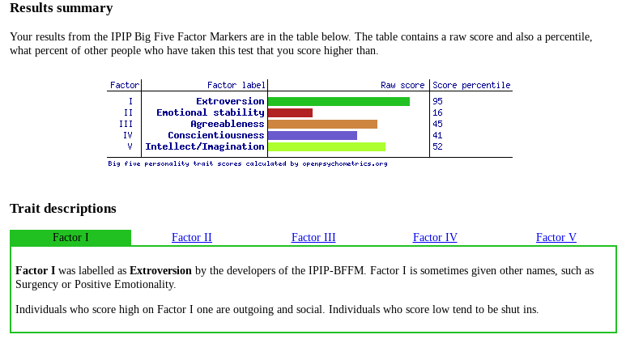
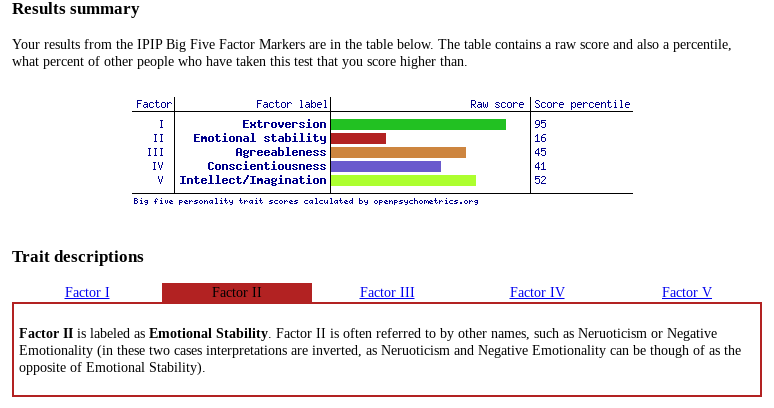
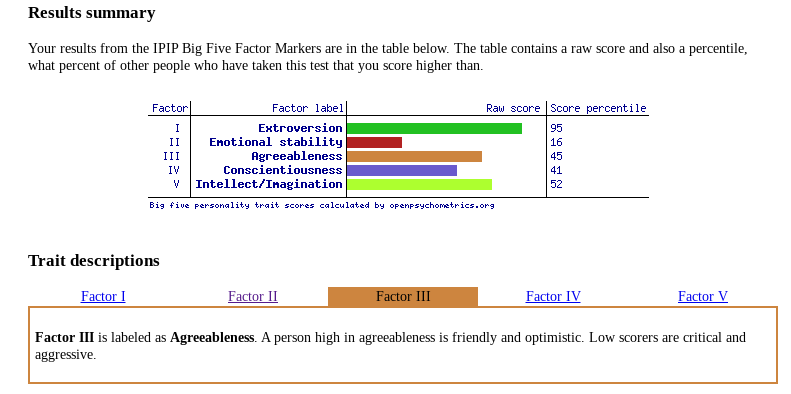
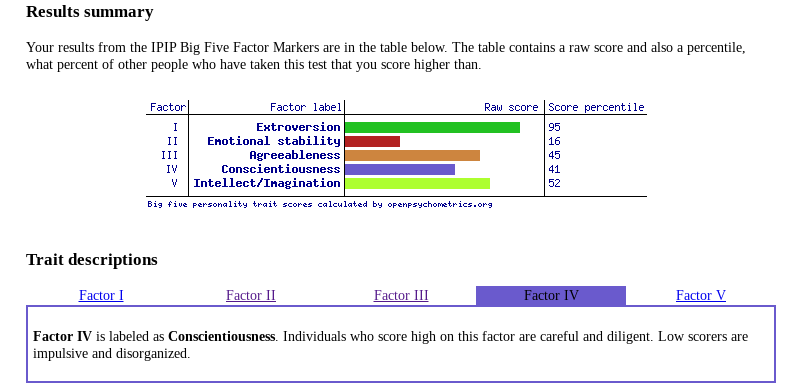
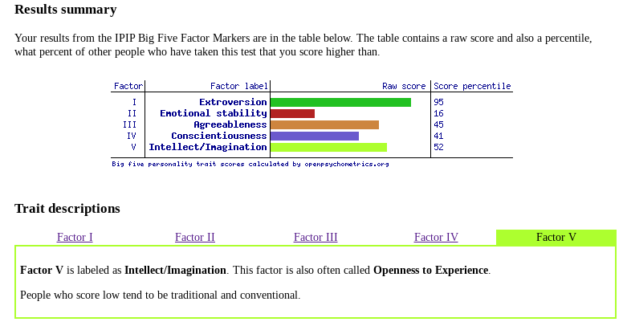

Introduction to Information Technology
Assignment 1
My Profile
S3899867 - Sam Paredes
Introduction
Hello! My name is Sam Paredes and I’m currently studying a Bachelor of Information Technology in my first year of University at RMIT. My student number is S3899867 and I am attending the City Campus. I am of South American and European descent but I am a born and raised Australian. I was born in Sydney Australia and moved to Melbourne in 2014 because of a job promotion for my father. My mother is from Paraguay in South America and my father is Argentinian and Spanish. Fun fact: This ultimately makes me a fluent spanish speaker. I’m bilingual and so are my 3 younger siblings. I’m a Christian and frequently attend Hillsong Church at least twice a month.
Hobbies & Interests
My hobbies include, going out on the weekends with my mates and going to bars and clubs, bingeing TV shows and films, gaming and listening to and making music. Throughout quarantine I learnt how to use music producing software like Ableton and garageband and made a full album with beats made from scratch. Ever since then, I’ve tried to learn more and more and broaden my music producing knowledge. I’m very interested in Politics, Film and Tv, Technology, Youtube, Conspiracy theories and Sport. In the AFL, I support the Collingwood Magpies and the Canterbury Bulldogs in the NRL. In soccer I support Barcelona FC and Manchester City.
Education
My education started in Haberfield Public School in Sydney from Prep until Year 5. When moving to Melbourne, I attended Mckinnon Primary College and finished my Primary Education there. For high school, I attended Mckinnon Secondary College and successfully completed my VCE studies with an 80+ ATAR. I was also awarded a VCE award for my excellence in Units 3&4 Data Analytics/Informatics. I duxxed my class and received a 40+ study score for it.
Interest in Information Technology
 I have been interested in technology and IT as a whole since I was in the 4th grade when I was given an award from my 4th grade teacher for my “Advanced IT skills”. I’ve always wanted to learn more and more about what Technology is and what is to come in the future from it. Technology is around us 24/7 as we are connected to it in some capacity everyday of our lives. I’m an avid social media user as I’m always reading up on global news and what's happening around the world on Twitter. Ever since I was a kid, I was glued to the computer screen and was fascinated by all you could do with the Internet and technology. Whether it was watching my favourite shows on Youtube or playing web games like Club Penguin and Poptropica, I was always drawn to technology.
I have been interested in technology and IT as a whole since I was in the 4th grade when I was given an award from my 4th grade teacher for my “Advanced IT skills”. I’ve always wanted to learn more and more about what Technology is and what is to come in the future from it. Technology is around us 24/7 as we are connected to it in some capacity everyday of our lives. I’m an avid social media user as I’m always reading up on global news and what's happening around the world on Twitter. Ever since I was a kid, I was glued to the computer screen and was fascinated by all you could do with the Internet and technology. Whether it was watching my favourite shows on Youtube or playing web games like Club Penguin and Poptropica, I was always drawn to technology.
 In high school, I was in every IT class available starting from Year 7 IT onto Year 12 Software Development and Year 12 Data Analytics. The subject of IT was always a strength of mine as I excelled in them in comparison to other subjects like English and Maths. In year 10 I became familiar with how to use Photoshop and create websites using Dreamweaver and in year 11 I extended my knowledge by getting taught how to create programs using Visual Basic. Throughout my high school experience, I also got taught the basic fundamentals of applications such as Microsoft Excel and Microsoft Access where I learnt how to store large quantities of data in a database for later manipulation such as making queries and reports. This is where I knew that I wanted to have a career in the IT field. The problem solving nature of creating programs using Visual Basic gave me the love and determination of IT and made me want to broaden my knowledge, thus I enrolled into RMIT and chose to pursue a Bachelor of Information Technology.
In high school, I was in every IT class available starting from Year 7 IT onto Year 12 Software Development and Year 12 Data Analytics. The subject of IT was always a strength of mine as I excelled in them in comparison to other subjects like English and Maths. In year 10 I became familiar with how to use Photoshop and create websites using Dreamweaver and in year 11 I extended my knowledge by getting taught how to create programs using Visual Basic. Throughout my high school experience, I also got taught the basic fundamentals of applications such as Microsoft Excel and Microsoft Access where I learnt how to store large quantities of data in a database for later manipulation such as making queries and reports. This is where I knew that I wanted to have a career in the IT field. The problem solving nature of creating programs using Visual Basic gave me the love and determination of IT and made me want to broaden my knowledge, thus I enrolled into RMIT and chose to pursue a Bachelor of Information Technology.
I chose to come to RMIT as I’ve heard from friends that are currently studying at RMIT that it has a great IT reputation and is known for its academic excellence within the IT field. The facilities that RMIT has to offer also gravitated me towards choosing it as my first preference. The location of the campus also attracted me as I love being within the city environment and surrounded by the amazing food culture and atmosphere that the Melbourne CBD has to offer.
Ideal Job
Link to Job Advertisement on Seek
Currently, If I had the choice to choose what job I wanted, I’d be a Data Analyst. On Seek, I found a job link that is finding employees that utilise skills in data analytics. The salary of the job is from $83,056 to $120,000 + 15.4% Superannuation.
What gravitates me to the role?
 The position is catered towards people that have experience and skills in Data Analytics. The role includes searching, managing and analysing large volumes of data and evidence using a range of technology platforms, working within a team environment, presenting and communicating results and providing innovative analytics solutions to increase the speed and efficiency of investigations, This appeals to me as I am very interested in Commerce and Information Technology and this position includes attributes from both subjects.
The position is catered towards people that have experience and skills in Data Analytics. The role includes searching, managing and analysing large volumes of data and evidence using a range of technology platforms, working within a team environment, presenting and communicating results and providing innovative analytics solutions to increase the speed and efficiency of investigations, This appeals to me as I am very interested in Commerce and Information Technology and this position includes attributes from both subjects.
Skills, Qualifications and Experiences Required
From the job description posted on Seek, the skills and qualifications needed are:
- Strong stakeholder management skills and the ability to communicate complex concepts in a range of ways
- A collaborative approach to problem solving
- The application of data analytics to business problems
- Presenting data and making recommendations based on data insights
- Data visualization
- Data sourcing, cleansing, manipulation and management
- Experience using programming and query languages
- Advanced excel skills
- A degree of IT, Commerce or a related discipline
Skills, Qualifications and Experiences I have
 I have prior knowledge and skills with Microsoft Excel, Microsoft Access, Google Sheets and other data storage applications that I can manipulate and transform for data visualisations and management. In high school I duxxed my class and received a VCE Award for Data Analytics and I believe these skills will allow me to learn more about Data Analytics and ultimately work as a Data Analyst. The qualifications needed for the job also include a degree in IT and currently, I am studying a Bachelor of IT and hopefully I complete it. I have prior experience with Data sourcing, manipulation and cleansing and these are all skills needed described on the job description.
I have prior knowledge and skills with Microsoft Excel, Microsoft Access, Google Sheets and other data storage applications that I can manipulate and transform for data visualisations and management. In high school I duxxed my class and received a VCE Award for Data Analytics and I believe these skills will allow me to learn more about Data Analytics and ultimately work as a Data Analyst. The qualifications needed for the job also include a degree in IT and currently, I am studying a Bachelor of IT and hopefully I complete it. I have prior experience with Data sourcing, manipulation and cleansing and these are all skills needed described on the job description.
How will I obtain skills needed for the Job
To further obtain skills needed for this job, I will complete my Bachelor of Information Technology and potentially transfer to a commerce/information technology double degree If I feel like after my first two semesters. I will try to learn and extend my knowledge with Excel and other data storage applications like it. Hopefully, throughout my course of IT, I will be able to learn about Data Management and the application of Data Analytics to business problems.
Personal Profile
After completing a Myers-Briggs Test, an Online learning styles test and a Big Five Personality test, the results that came out of them were scarily accurate.
16 Personalities
The 16 personalities test showed that I have a Debater Personality (ENTP-A/ENTP-T). To make sure that the results were accurate, I completed the test twice to make sure that the same result showed up twice and it did. According to the description of the personality style, I am a person with the Extraverted, Intuitive, Thinking and Prospecting personality traits. I tend to be bold, creative, deconstructing and rebuilding ideas with great mental agility. I pursue goals vigorously despite any resistance that I may encounter, according to the results. The personality test also reveals that other people with my personality type are uncompromisingly honest as this is very ultimately true. I say things as they are and don't tend to sugar-coat the truth.
Strengths of my personality include:
- Knowledgeable
- Quick Thinkers
- Original
- Excellent Brainstormers
- Energetic
Weaknesses of my personality include:
- Very Argumentative
- Insensitive
- Intolerant
- Can find it difficult to Focus
- Dislike practical Matters
Online Learning Style Test
I also completed an Online Learning style test that assesses the type of learning style I am. After completing the test, the results showed that I am:
30% Auditory
30% Visual
40% Tactile
Ultimately, the test showed that I am a Tactile Learner. This means that I learn by touching and doing. I understand and remember things through physical movement. I am a “hands on learner” who prefers to touch, move, build, or draw what I learn, I tend to learn better when some type of “physical activity” is involved, such as coding. The results also showed that I need to be active and take frequent breaks and I also speak with my hands or gestures.
The results also showed that tactile learners like myself can learn better when I :
Participate in activities that involve touching, building, moving or drawing
Do lots of hands-on activities like completing art projects, taking walks, or acting out stories.
It's OK to chew gum, walk around, or rock in a chair while reading or studying.
Trace words with your finger to learn spelling (finger spelling).
Take frequent breaks during reading or studying periods (frequent, but not long).
It's OK to tap a pencil, shake your foot, or hold on to something while learning.
Use a computer to reinforce learning through the sense of touch.
Big Five Personality Test
I also conducted a Big Five Personality Test to assess my Extroversion, Emotional Stability, Agreeableness, Conscientiousness adn Intellect/Imagination. The results were:
On the Extroversion factor, I came out with a score percentile of 95. This means that I am outgoing and social which is accurate to my actual personality.

On Emotional Stability I received a score percentile of 16. This means I have a low emotional stability.

For the third Factor of Agreeableness, I received a score of 45. A person with a high score is friendly and optimistic and people with low scores are critical and aggressive. I personally see myself as both and the results prove that to be correct.

The fourth factor is Conscientiousness. I received a score percentile of 41. Individuals that scored high on this factor are careful and diligent and people with low scores are impulsive and disorganized. I once again see myself as someone who is careful but also impulsive, thus the score percentile is closely accurate.

The fifth factor is Intellect/Imagination. I received a score percentile of 52. People who have a low score tend to be traditional and conventional. I am traditional but also am progressive in ideas.

Conclusion
What do the results of these tests mean for you?
How do you think these results may influence your behaviour in a team?
How should you take this into account when forming a team?
Project Idea
Overview
In my free time, I dabble in producing music in software like Garageband and Ableton. The biggest problem I face is finding new samples and sounds to use while making music. To combat this, my Project Idea is an application that allows users to upload and download free to use sound bites, samples and loops that could be used in making music. A website that is similar to my project idea is Looperman. This is a competitor website that allows anyone to create samples of music and upload them onto the site that gives other users the choice to download it and upload it to a music software program.
Motivation
A site such as Looperman contains nearly 200,000 unique loops uploaded by music producers around the world with the most popular sample being downloaded 42,544 times. There is obviously a large market for loop and sample finding and there are hundreds of thousands music producers trying to find the next unique sound or beat for their song. I experienced this during quarantine as I learnt how to produce music by myself and kept trying to find the right sound to manipulate and add on to. I kept going to sites such as Looperman and Function Loops but the user interface and navigation was lacking in ease of use and attractiveness.
Description
 The main functions of my project include an efficient User Interface that has Navigation that people with limited IT knowledge can adapt and learn how to use properly. The app will have a simple user experience as the users can easily upload an mp3 or wav file into their personal profile and other users can download the audio files directly to their computer in high quality. The proposed project plan will allow users to sort the samples by genre of loops, date, length of sound and most popular loops. This will give the user the choice to choose loops and samples based on genre and to download them efficiently to either their phone or computer. Other sites that allow for loop and sample downloads are protected by a monthly paywall but my proposed project idea will not have one.
The main functions of my project include an efficient User Interface that has Navigation that people with limited IT knowledge can adapt and learn how to use properly. The app will have a simple user experience as the users can easily upload an mp3 or wav file into their personal profile and other users can download the audio files directly to their computer in high quality. The proposed project plan will allow users to sort the samples by genre of loops, date, length of sound and most popular loops. This will give the user the choice to choose loops and samples based on genre and to download them efficiently to either their phone or computer. Other sites that allow for loop and sample downloads are protected by a monthly paywall but my proposed project idea will not have one.
 Each account made will allow the user to upload an audio file of their choice, give it a description of the sound uploaded, genre of the audio sound and a comment section embedded into the page that gives other users the choice to give comments on each sample or loop available. The application/website will contain different pages based on genres such as Rap & Hip Hop, Pop, R&B, EDM, House Music, Techno and Hardstyle. Sites such as Looperman are predominantly used by people finding samples and loops for these genres, therefore my application will be exclusive to these genres as it would be catering to a specific but large target audience. The site will also give users the choice to add the BPM of each audio file, a display image and users with accounts are the only people allowed to download the sounds. It will also show the music producer who has downloaded the audio file and how many times that particular sound has been downloaded.
Each account made will allow the user to upload an audio file of their choice, give it a description of the sound uploaded, genre of the audio sound and a comment section embedded into the page that gives other users the choice to give comments on each sample or loop available. The application/website will contain different pages based on genres such as Rap & Hip Hop, Pop, R&B, EDM, House Music, Techno and Hardstyle. Sites such as Looperman are predominantly used by people finding samples and loops for these genres, therefore my application will be exclusive to these genres as it would be catering to a specific but large target audience. The site will also give users the choice to add the BPM of each audio file, a display image and users with accounts are the only people allowed to download the sounds. It will also show the music producer who has downloaded the audio file and how many times that particular sound has been downloaded.
My site will also include a Forum page that allows users to request specific sounds, talk to other music producers and give feedback on uploaded beats. This allows for collaboration between different music producers and the chance for communication between each other. It would also be a social space for music producers to make connections and potentially make friends and collaborators.
Other competitors of my idea such as Looperman and Function Loops have an unattractive and hard to use User Interface whereas my site will contain an attractive and easy to use User Experience. The colour palette of my site is going to be Black, White, Red and Grey. The website will also contain a settings page that can give the user the choice to turn the page into Dark Mode.
The Profile page of my site allows the user to give themselves a username, display image, description and contact information. The site could also allow users to link their profile to their social media sites such as Facebook and Instagram.


Tools and Technologies
For the making of my application, I will either utilise MIT App Inventor or Visual Basic. I have prior experience and knowledge with creating applications and programs with Visual Basic so for now, It is my first choice of chosen application. The more I learn throughout this course, the more I will be able to find other software that could turn my Project Idea into a reality. At first glance MIT App Inventor looks like a program that will help me satisfy all the requirements for my application. For the moment, I am still deciding between using either MIT App Inventor or Visual Basic.


Skills Required
The skills required to make this Application include prior knowledge in Coding, Designing a usable and attractive user interface & user experience and Determination and Hard Work. I have experience with coding languages such as Visual Basic and C++. These skills will allow me to create my application if I choose to use Visual Basic. In year 12, I created an application with Visual Basic as I have previous user interface designing experience. Determination and Hard Work are also skills required for the completion of this project as I need to be determined and work persistently, efficiently and effectively.
Outcome
If I am able to successfully complete and create an application that will satisfy my requirements, music producers like myself will have a platform that can allow other music producers to share and upload samples and loops, ultimately a social hub for people that make music. I’ve encountered problems like finding the right sample and competing sites have helped me find some samples but I feel that with my proposed idea, finding samples and loops will never be easier. If created properly and with a satisfactory end product, my project idea has the potential to be a worldwide used application.